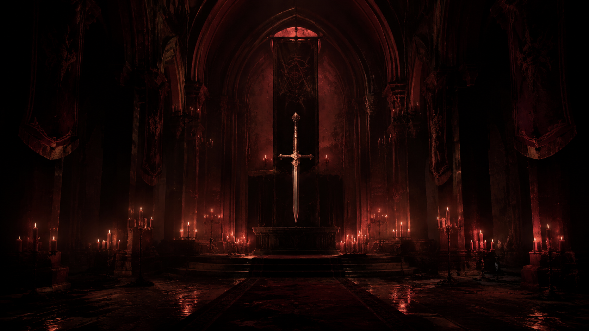

救赎
A place for those who seek the light, and those who have lost themselves in it.
每个人的一生，都会有迷失的时候。
有些人迷失在过去，有些人迷失在欲望，有些人迷失在自己曾经相信的一切之中。
我们创造这个地方，并不是为了给予你简单的答案。
因为真正的答案，从来不会出现在别人告诉你的道路上。
它隐藏在你的记忆里，隐藏在你的选择里，隐藏在那些你不愿再次面对的瞬间。
很多人认为救赎意味着被原谅。
但我们相信，救赎首先意味着面对。
面对那些被遗忘的错误。
面对那些无法改变的过去。
面对白天被隐藏、夜晚却不断回响的声音。
如果你来到这里，请不要急着寻找出口。
有时候，只有走进最深处的黑暗，才能知道自己真正想寻找的是什么。
I. THE FIRST STEP
第一步
每一段旅程，都从一个问题开始。
你是否曾经感觉，自己正在远离真正的自己？
你是否曾经回望过去，却发现那个熟悉的人已经变得陌生？
我们习惯隐藏伤痕。
我们习惯告诉别人“我很好”。
我们习惯继续前进，即使心里有一些东西从未真正离开。
但被隐藏的东西，并不会消失。
它们会等待。
等待某一天，你终于愿意停下来，听见它们的声音。
这里没有审判。
没有人要求你证明自己值得被拯救。
但请记住：
任何真正的改变，都需要一个人拥有面对自己的勇气。
如果你准备好了，
请继续向前。
II. THE WEIGHT OF MEMORY
记忆的重量
人们总是认为，时间会治愈一切。
但时间真正做的事情，也许只是让伤口变得安静。
有些记忆不会消失。
它们会藏在一句话里。
一个声音里。
一个熟悉却无法解释的感觉里。
很多人害怕回忆。
因为回忆意味着承认：
曾经发生过的事情，确实改变了自己。
但是过去并不是敌人。
它只是等待被理解。
每个人都有属于自己的秘密。
有些秘密值得被释放。
有些秘密需要被守护。
还有一些秘密……
也许从一开始，就不应该被发现。
如果你正在寻找救赎，
请先问自己一个问题：
你真的想知道真相吗？